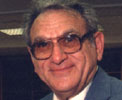

ООН - преемница нацистов
22
Сентября 2009
|
 |
В свей
статье “ООН-ООП: ось зла” я напомнил, что 7 ноября
Следует вспомнить, что ООН была создана в 1945 г. как реакция на нацизм, который привел ко Второй мировой войне и Холокосту. Тем не менее, в 1975 г., когда ООН удостоила ООП места на Генеральной ассамблее и объявила, что “сионизм это расизм”, она превратилась в международную преемницу нацизма. Эта резолюция явилась молчаливым объявлением войны Израилю и еврейскому народу. Именно в этом свете следует понимать, почему ООН открыла свои двери перед ООП и тем самым легитимировала всемирную террористическую организацию, преданную цели уничтожения Израиля.
ООП следует рассматривать как острие копья ООН. Лишь после предоставления ООП статуса наблюдателя в Генеральной ассамблее там начали вноситься одна за другой резолюции, до того задавливаемые, которые теперь принимались, осуждая Израиль и ставя под вопрос легитимность его существования. Не будучи в состоянии победить Израиль на поле боя, арабы использовали ООП и ее присутствие в ООН, чтобы обесчестить и разрушить “сионистское образование”.
Власть в Совете по правам человека ООН держат в своих руках такие организации как Исламская конференция - конгломерат деспотических исламских режимов, противоречащих по своей сути Хартии ООН. Организация Исламской Конференции категорически настаивает, что определение терроризма никогда не включает ‘вооруженную борьбу за освобождение и самоопределение’, так что, когда арабские террористы взрывают еврейских мужчин, женщин и детей в синагогах, кафе, торговых центрах, пиццериях, автобусах и на дискотеках, это приемлемо и оправдано.
Когда Ориана Фаллачи спросила Ясера Арафата, стремится ли он к миру, он ответил: “Нам нужен не мир, нам нужна победа. Мир для нас означает уничтожение Израиля, и ничто иное. То, что вы называете миром, это мир для Израиля… Для нас это позор и несправедливость. Мы продолжим борьбу до победы. Даже если для этого потребуются десятилетия, поколения, если это будет необходимо”. Это полностью соответствует джихадистскому этосу ислама - а ислам представлен в ООН самым крупным блоком государств.
Другого такого блока государств в ООН нет. Бернард Люис (крупнейший в западном мире знаток ислама) отмечает, что нет ни христианского, ни буддистского блока государств, которые встречались бы и принимали решения относительно общего курса действий в ООН. Напротив, “около пятидесяти пяти мусульманских стран, среди них монархии и республики, консерваторы и революционеры, практикующие капитализм и последователи всех видов социализма, друзья и враги Соединенных Штатов и приверженцы целого спектра различных видов нейтралитета, создали отлаженный аппарат международных консультаций и даже, в некоторых случаях, сотрудничества. Они проводят регулярные конференции в верхах и, несмотря на всю разницу в структуре, идеологии и политике, достигли значительной степени согласия и единства действий”.
С учетом власти исламского блока в ООН и раскинувшейся по всему исламскому миру сети мечетей, проповедующих джихад и ненависть к Западной цивилизации в целом и к Америке и Израилю, в частности, для США и Израиля оставаться в ООН не только абсурдно и смешно, но унизительно и самоубийственно.
В 1975 г. сенатор Патрик Мойнихен, тогда посол США в ООН, настаивал, что США должны оставаться в ООН в оппозиции. В отличие от него, известный журналист Чарльз Краутхаммер сказал, что ООН не заслуживает того, чтобы ее спасать, и что США “должны позволить ей потонуть”. Оставаясь в ООН, как США, так и Израиль подрывают то, чего так недостает в нынешний век нигилизма - моральную ясность.
Моральная ясность особенно необходима в отношении ислама, который Бат Еор, один из крупнейших авторитетов в мире в вопросах ислама, назвала “культурой ненависти”, которая, по этой причине, может быть названа “культурой зла”. Как еще можно назвать Иран, возникающую сверхдержаву Ближнего Востока, которая проповедует “смерть Америке” и “смерть Израилю”? Что еще можно сказать про Саудовскую Аравию, которая финансирует террористические группировки для осуществления этих проклятий? ООН стала генератором этого зла, которое значительно перевешивает любое добро, которое какие-то скрытые ооновские агентства могут оказывать в помощь обездоленным в Африке, если только ООН сама не способствует межплеменным конфликтам, ведущим Африку к нищете и болезням.
Стоит для примера рассмотреть деятельность UNRWA, ооновского агентства помощи и реабилитации арабским беженцам. UNRWA увековечила гниение арабов в лагерях беженцев, которые превратились в рассадники террора и которые пропаганда ООП использует для взращивания ненависти к Израилю.
Тем временем ЮНИФИЛ, миротворческие силы ООН в Ливане, сотрудничают с “Хизбаллой”, которая, будучи вооружена тысячами переданных через Сирию иранских ракет, захватила контроль над Ливаном. Вместо того чтобы служить в качестве миротворческой силы, ЮНИФИЛ фактически потворствовали нападениям “Хизбаллы” на Израиль, в результате чего в июле 2006 г. разразилась Вторая ливанская война. Но это означает, что ООН под видом миротворческих усилий фактически преследует целью геноцид нацистского плана и уничтожение Израиля.
Я не вижу практической разницы между ООН и ООП в отношении к Израилю. Когда Арафат признал в интервью Ориане Фаллачи, что “мир для нас означает уничтожение Израиля и ничто иное”, он раскрыл то, что скрыто в ооновской резолюции “сионизм = расизм”. Что еще означает эта декларация войны против сионизма, если не уничтожение Израиля? Не очевидно ли, что уничтожение Израиля это “окончательное решение” “еврейской проблемы” - цель нацистско-немецкого геноцида?
Хотя резолюция “сионизм = расизм” была отменена, фактически отменены были лишь слова на бумаге. Для имеющих глаза, чтобы видеть, смертоносные цели этой резолюции остаются главной целью ООН, если не ее raison d’être - смыслом ее существования. ООН не способствует миру: она не способствует коллективной безопасности; она не способствует свободе и правам человека; короче говоря, ООН является врагом всех тех целей, ради которых она якобы была изначально создана. Говоря кратко, ООН представляет собой зловонную и ядовитую клоаку.
Поэтому мне кажется, что ни одна интеллектуально честная и достойная страна не должна оставаться в этой выгребной яме. Среди всех стран, Израиль должен первым выйти из этой организации, антиизраильские резолюции которой носят антисемитские и близкие к нацистским мотивы. Что потеряет Израиль, предприняв такой шаг? Израиль не потеряет своей легитимности. ООН многократно превращала легитимность Израиля в бессмыслицу, отказывая ему в праве на самозащиту от террористов ООП. Именно таков эффект доклада ооновской комиссии Голдстона, который осудил Израиль, наказавший ХАМАС в секторе Газы, хотя конституция этой организации, как и Хартия ООП, призывает к уничтожению Израиля.
Более того, утверждая, что определение терроризма неприменимо к группам, занятым вооруженной борьбой за самоопределение, ООН поднимает ХАМАС на один уровень с Израилем. Таким образом, ООН погрязла в моральном релятивизме, превращающем в бессмыслицу легитимность любого члена ООН, а, следовательно, и самой ООН. Далее, бесчисленные ооновские резолюции, осуждающие Израиль и никогда - нападающих на него арабских агрессоров, являются не только проявлением морального релятивизма, но и нарушением Всеобщей Декларации Прав Человека” Например:
Статья 1: “Все люди рождены свободными и равными в своем достоинстве и правах. Они наделены разумом и совестью и должны действовать по отношению друг к другу в духе братства”.
Статья 3: “Каждый имеет право на жизнь, свободу и личную безопасность”.
Статья 30: “Ничто в этой Декларации не должно интерпретироваться как подразумевающее право любого государства, группы или человека участвовать в деятельности или осуществлять действия, направленные на разрушение любых прав или свобод, перечисленных выше”.
Что приобретет Израиль, выйдя из ООН и призвав к созданию Объединенных Наций демократических стран, преданных миру, благосостоянию и человеческому достоинству - ООН, которая будет помогать бедным странам в достижении этих целей? Израиль в таком случае будет верен своей исторической миссии: он не только будет способствовать моральной ясности и служить лучом света для человечества, но и сможет помочь в облегчении человеческих страданий, предложив свои колоссальные научные и медицинские знания человечеству, если он будет избавлен от генерируемого в ООН антисемитизма.